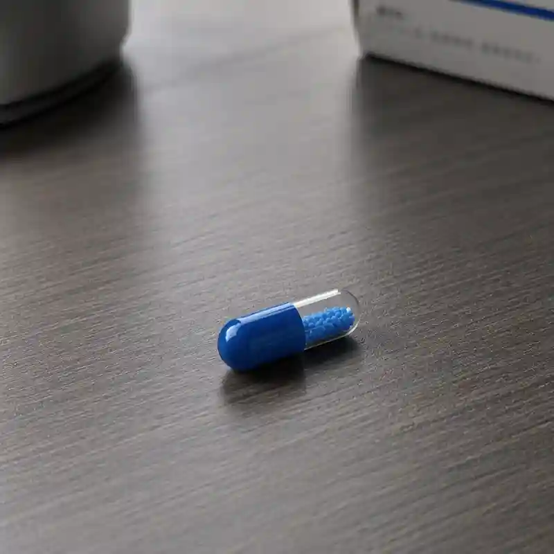

OFO
Organization for Oneirology

复方妥钠二乙酰胺胶囊 (Compound Sodium Diacetamide Capsules)
复方妥钠二乙酰胺潜意识干预波 (Auditory Subconscious Intervention Wave of Compound Sodium Diacetamide)
蓝药丸 / Blue Pill
实物成分：本品实物为极其特殊的“生化-电子”复合制剂，由两部分核心成分构成：
药理激活性质：盐酸二甲基色胺（DMT）变体衍生物R-74，及高浓度神经递质泵激动剂。
数字微件：悬浮于药液中的纳米级可降解生物射频芯片，及意识上传集成网络的微型物理端口集线器。
辅料：微晶纤维素、硬脂酸镁、交联聚维酮、导电生理盐水缓冲液、浅蓝色薄膜包衣预混剂。
线上成分：本品线上成分为以盐酸二甲基色胺变体衍生R-74为核心，通过超声波载荷构建的一套含有微型的网络通讯协议的特殊音频序列。
实物性状：本品实物为半透明海蓝色硬胶囊，内部封装高黏度亮蓝色液体。对光观察时，可见液体内部有极其微小的银色金属粉尘呈现无规则布朗运动。
线上性状：本品线上表现蓝色波形图标加密音频文件。听感上极其尖锐、刺耳。初始阶段类似旧式56调制解调器的“滴答”拨号声与传真机的高频啸叫，随后会转变为极具压迫感的多重失真人声合唱底噪。长时间聆听会导致严重的心跳加速与耳膜胀痛。
通过药物强行打破大脑血脑屏障与潜意识防火墙，并利用体内的纳米芯片建立局域网直连，允许服用者的意识短暂上传并接入人类集体潜意识的集成网络层。帮助患者加强异常链接，增强梦境细节，调查梦境真相。
10mg（活性药理成分）+1.5亿个纳米生物节点/粒。
严禁与“红药丸”在72小时内混合使用！“红药丸”的神经抑制效果与“蓝药丸”的神经超频效果将发生致死性冲突，极易引发不可逆的脑溢血或神经元烧毁。
精神状态极度不稳定、存在严重心理创伤未愈合的成员禁用。
下潜时限：现实世界中的药效维持时间约15分钟（在集体潜意识的时间流速感知中可能长达数天）。一旦监控脑电波峰值逼近红线，看护者必须立即向服用者注射肾上腺素进行强制物理唤醒，强行切断上传网络。
服药后8小时内，绝对禁止从事驾驶、高空作业及任何需要高度集中注意力的脑力活动。
药片保管：本药物实体化合物对特定频率的光波及电磁辐射极其敏感，必须存放于解梦会配发的特制避光防磁袋中。若发现药片褪色、开裂或表面出现不规则的黑色斑块，请立即交由研发部销毁，严禁吞服。
本品是对人类神经系统极具破坏性的破解工具，服用后必将产生以下不良反应：
常见：强烈的濒死感、失重感；苏醒后伴随长达数小时的现实解体症状；严重的脱水与体温飙升，长期服用会散发类似葡萄香气的体味。
长期副作用：服用者的怪梦频率将产生不可逆的激增。
极罕见：意识迷失。若下潜过深或遇异常切断，服用者的脑电波将迷失在集体潜意识的深海中无法下载，肉体将陷入永久性脑死亡（植物人状态）。
本品打破了生物学与信息学的边界。胶囊吞服后，外壳在胃酸中溶解。高浓度的变体DMT瞬间随血液冲入大脑，强行将所有的突触接收器全部敞开，使大脑进入超频感知状态。同时，释出的纳米生物芯片会附着在胃壁毛细血管上，利用人体生物电启动。这些芯片相当于在服用者体内建立了一个微型基站。外部启动特定的集成网络协议后，服用者的神经电信号将被转化为数字信号进行实时抓取，将意识打包上传至私有服务器构筑的潜意识深网接口。
研发机构：解梦会理事会-研发部
批准文号：核心绝密文件。该药品的存在严禁对其余成员提及
实物：口服。儿童不宜服用，成人起始剂量为每日一次，每次1粒（10mg），于睡前30分钟内温水送服。
线上：儿童不宜服用，成人起始剂量为每日一次，每次1轨（30分钟）。
* 注：具体用药频率需严格遵照理事会下发的排期表执行，未经研发部（玖和主任）授权，严禁擅自增减剂量。